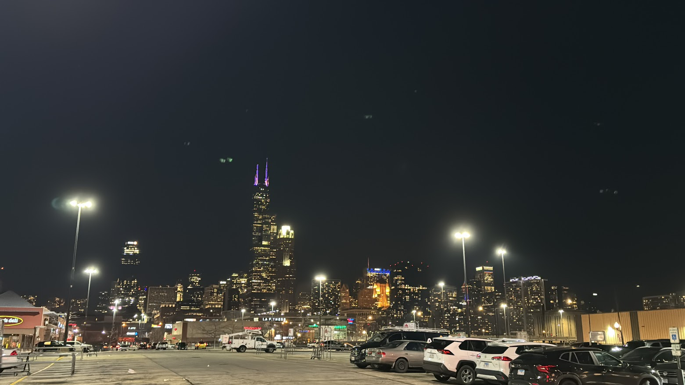
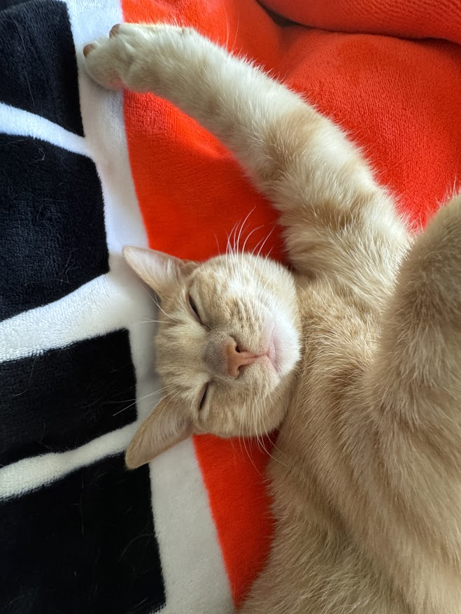
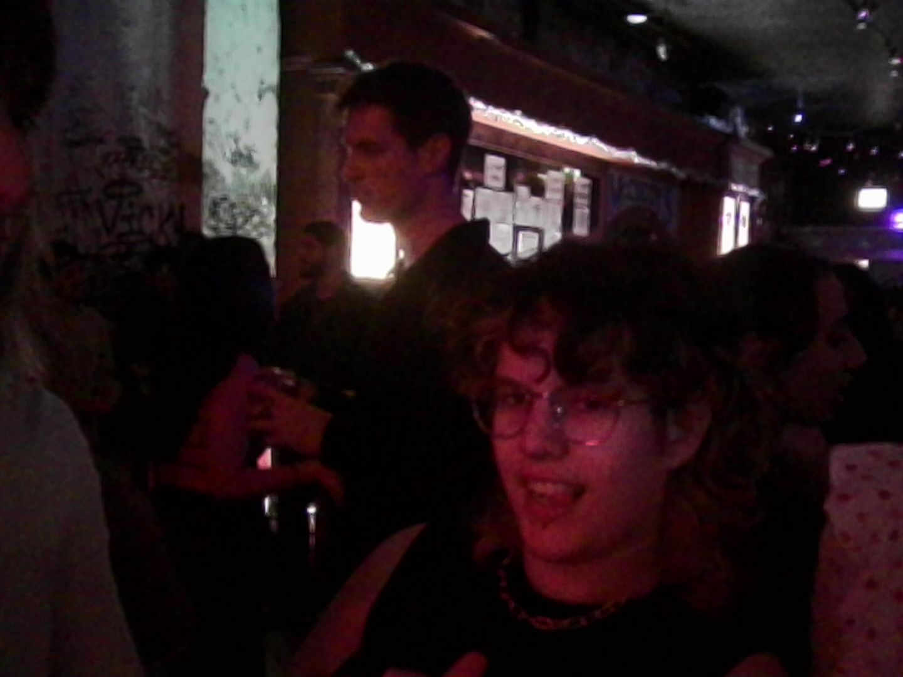

what's new
i started term 2 of grad school and its lowkey kicking my ass. like i have much shit to do all the time. but luckily i just started my new job at harold washington college as a media specialist, which means i get to sit at my desk most of the day waiting for tickets to roll in, or help with tech at scheduled events. very chill and awesome job, chill coworkers even though they are all men. i dig it so far. also i love the shit im working on at school, its just a lotrecent adventures

 - i went barhopping in pilsen with riley before going to the giant pennywhistle (a club). they played 2016 hits lowkey it was crazy fun.
- ive been to the taqueria near my apartment at least 7 times this month though. support local businesses
- also celebrating anna's birthday tonight at the barcade it is gonna be lit crazy movie. luv u anna happy birthday.
consumer corner
my faves from this month
i think all of 2025 i was pretty much in a transitional period and was consuming a lot of media i was comfortable with, but i am trying to branch out into new stuff this year now that i am settled in chi town. i did LOVE heated rivalry and also have been repeating harrys new single. also really into geese which apparently is trendy rn bc of tiktok. i hate how much tiktok influences what spotify pushes.
played: stanley parable
 listened: 3D Country by Geese
listened: 3D Country by Geese
 watched: DA PITT SEASON 2
watched: DA PITT SEASON 2
read: unfortunately i dont do that